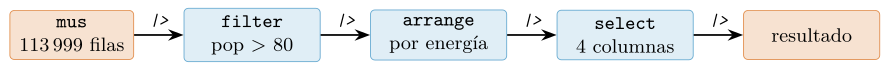
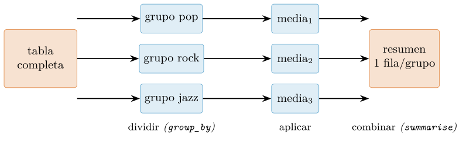
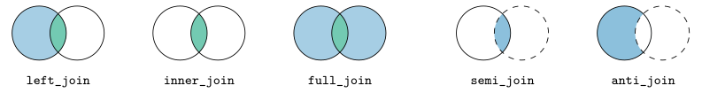
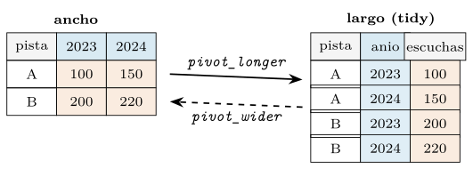
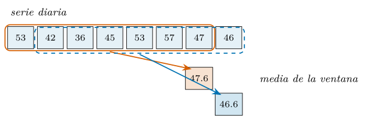

Capítulo 8. Análisis tabular con dplyr y tidyr
▶ Ejecutar este capítulo en Binder
La primera vez que se abre, Binder construye el entorno en la nube (unos 10-20 min); verás una pantalla de progreso. Después queda en caché y abre en segundos. Si parece que no responde, espera a que termine de construirse o vuelve a intentarlo.
Aquí empieza el trabajo por el que la mayoría llega a la ciencia de datos: manipular tablas. Filtrar filas, elegir columnas, agrupar y resumir, unir dos fuentes, remodelar de ancho a largo —el pan de cada día del análisis— tiene en R una respuesta tan pulida que se ha convertido en una de sus señas de identidad: dplyr y tidyr, el núcleo del tidyverse (Wickham et al. 2019). Su propuesta no es una biblioteca de funciones sueltas, sino una gramática: un puñado de verbos que se combinan con la tubería para expresar cualquier transformación tabular como una frase legible, que se lee de izquierda a derecha en el orden en que ocurre. Quien domina esa gramática escribe menos código, comete menos errores y —lo más importante— escribe análisis que otro puede leer.
El recorrido: primero, el tibble, el data frame moderno sobre el que opera todo; después, los cinco verbos fundamentales —seleccionar, filtrar, ordenar, transformar, resumir— y la tubería que los encadena. Luego, el corazón del capítulo: group_by, el idioma «dividir, aplicar y combinar» que responde la mayoría de las preguntas de datos; las uniones que combinan tablas por claves; y el remodelado entre forma ancha y forma larga con tidyr, apoyado en el principio de los tidy data. Sigue el tratamiento del tiempo —fechas con lubridate, remuestreo, ventanas móviles y la tabla temporal tsibble—; y las trampas de rendimiento —no iterar filas, entender cuándo la tubería copia y cuándo comparte, y el motor data.table para cuando el volumen aprieta—. Cierra un integrador que analiza el catálogo musical de principio a fin. Como siempre, cada cifra se ha ejecutado sobre los datos reales antes de imprimirla.
El tibble: el data frame moderno
Todo el análisis tabular de R gira en torno a una estructura que ya conocemos del capítulo 2: el data frame, esa lista de columnas de igual longitud. El tidyverse trabaja con una versión mejorada, el tibble, que es un data frame en todo lo que importa —de hecho, hereda de él— pero con unos cuantos comportamientos más sensatos para el trabajo interactivo. La relación de herencia importa y conviene tenerla clara: como un tibble es un data frame (cap. 6), cualquier función que espere un data frame lo acepta sin conversión, de modo que el tibble no aísla del resto de R sino que se integra con él. No hay que elegir entre «el mundo tidyverse» y «el mundo base»: son el mismo mundo, y el tibble es un data frame con mejores modales, no una estructura rival. El catálogo musical, leído con arrow (cap. 5), llega como tibble:
library(dplyr); library(arrow)
mus <- read_parquet("data/processed/musica.parquet")
class(mus)
#> [1] "tbl_df" "tbl" "data.frame" <- es un tibble Y un data.frame
mus
#> # A tibble: 113,999 x 20
#> track_id artists album_name track_name popularity duration_ms explicit
#> <chr> <chr> <chr> <chr> <int> <int> <lgl>
#> 1 5SuOikwi... Gen H... Comedy Comedy 73 230666 FALSE
#> ... (113.989 filas mas, 13 columnas mas)La diferencia salta a la vista en cómo se imprime. Un data frame clásico volcaría las 113 999 filas por pantalla y las ahogaría; el tibble muestra las diez primeras, indica cuántas quedan, y —detalle crucial— escribe el tipo de cada columna bajo su nombre (<chr>, <int>, <dbl>, <lgl>). Esa cabecera de tipos convierte cada impresión en una comprobación gratuita: si una columna que debería ser numérica aparece como <chr>, el problema se ve al instante y no tres pasos después (cap. 5). El tibble tiene además otras virtudes discretas —nunca convierte cadenas en factores por su cuenta, no permite el emparejamiento parcial de nombres que confundía en el capítulo 2, y se queja si pides una columna que no existe en vez de devolver NULL—, todas en la dirección de fallar pronto y ruidosamente en lugar de tarde y en silencio. Esa filosofía —«fallar pronto»— recorre todo el tidyverse y merece apreciarse como decisión de diseño: un error que salta en la línea que lo causa cuesta minutos de arreglar; el mismo error propagado en silencio hasta manifestarse tres pasos después, como un resultado absurdo, cuesta horas de rastreo. El tibble prefiere molestar hoy a engañar mañana, y esa preferencia, multiplicada por los cientos de operaciones de un análisis, es una fuente silenciosa de fiabilidad.
Para lo que sigue, basta quedarse con una idea: un tibble es un data frame, así que todo lo aprendido sobre el modelo de datos de R (cap. 2) sigue valiendo; y es un data frame que se porta mejor en el análisis interactivo, así que es lo que usaremos. Los verbos de dplyr aceptan cualquier data frame y devuelven siempre un tibble, de modo que trabajar con ellos ya te sitúa en el buen lado sin esfuerzo. Para construir un tibble a mano, tibble() lo crea por columnas y tribble() —«transposed tibble»— por filas, con una sintaxis que dibuja la tabla en el código, cómoda para los ejemplos pequeños de este capítulo. Y as_tibble() convierte cualquier data frame heredado, de modo que entrar en la gramática desde datos ajenos es siempre una línea. Merece una nota el contraste con el data frame clásico en un punto concreto: el tibble no tiene nombres de fila (rownames). Donde base R permitía identificar filas por una etiqueta al margen de las columnas, el tidyverse insiste en que un identificador es un dato y debe vivir en una columna con nombre (cap. 5), no en un margen implícito. Es una restricción deliberada que evita una fuente clásica de confusión, y rownames_to_column() rescata el identificador de un data frame heredado a una columna de pleno derecho.
Los cinco verbos y la tubería
La gramática de dplyr se construye sobre cinco verbos, cada uno una función que toma una tabla y devuelve una tabla transformada. Esa clausura —tabla entra, tabla sale— es lo que permite encadenarlos con la tubería (cap. 2) para formar una frase. Los cinco:
select()elige columnas por nombre.filter()elige filas por condición.arrange()ordena las filas.mutate()crea o modifica columnas.summarise()colapsa muchas filas en un resumen.
La elección de estos cinco no es arbitraria: cubren las cuatro cosas que se pueden hacer con una tabla —elegir columnas, elegir filas, crear columnas, colapsar filas— más el orden. Cualquier transformación tabular, por compleja que parezca, se descompone en una secuencia de estas operaciones, igual que cualquier frase se compone de un puñado de tipos de palabra. Esa completitud con pocas piezas es lo que hace de dplyr una gramática y no un catálogo: no hay que aprender una función distinta para cada tarea, sino combinar cinco verbos de infinitas maneras.
| Familia | Verbo | Qué hace |
|---|---|---|
| columnas | select, rename, relocate |
elegir, renombrar, reordenar |
| filas | filter, slice, distinct, arrange |
elegir y ordenar filas |
| crear | mutate, transmute, across |
columnas nuevas o transformadas |
| resumir | summarise, count, tally |
colapsar a un resumen |
| agrupar | group_by, .by, rowwise |
marcar cómo dividir |
| combinar | left/inner/full_join, semi/anti_join, bind_rows |
unir tablas |
| remodelar | pivot_longer/wider, separate_*, unite |
ancho \(\leftrightarrow\) largo |
| anidar | nest, unnest, complete |
tablas dentro de tablas |
Los tres primeros no cambian el número de columnas ni el contenido, solo eligen y ordenan; mutate añade; summarise reduce. Vistos en acción sobre el catálogo, cada uno es una frase corta y transparente:
mus |> select(track_name, track_genre, popularity) # tres columnas
mus |> filter(popularity > 95) # 25 pistas superventas
mus |> arrange(desc(popularity)) # de mas a menos popular
mus |> mutate(minutos = round(duration_ms / 60000, 2)) # nueva columna
mus |> summarise(n = n(), pop_media = mean(popularity))
#> # A tibble: 1 x 2
#> n pop_media
#> 113999 33.2Dentro de cada verbo, los nombres de columna se escriben desnudos, sin comillas ni $: filter(mus, popularity > 95), no filter(mus, mus$popularity > 95). Eso es la evaluación ordenada del capítulo 6 en acción —filter captura la expresión popularity > 95 y la evalúa en el contexto de la tabla—, y es lo que hace que el código se lea como lenguaje natural. La otra pieza es desc() para ordenar de mayor a menor, y ayudantes de selección como starts_with(), ends_with() o where(is.numeric) que eligen columnas por patrón en lugar de una a una. Que los nombres vayan desnudos tiene una contrapartida que conviene conocer y que el capítulo 6 ya anticipó: cuando el nombre de la columna llega como una cadena —de una configuración, de un argumento de función—, no se puede escribir desnudo, y hay que recurrir al pronombre .data[[nombre]] o al abrazo { }. Es la frontera entre el análisis interactivo, donde los nombres se teclean, y las funciones reutilizables que envuelven dplyr, donde los nombres son datos. Para el trabajo diario, los nombres desnudos; para escribir utilidades, las herramientas de la evaluación ordenada.
La tubería: encadenar en una frase
El verdadero poder aparece al encadenar. La tubería |> (cap. 2) pasa el resultado de cada verbo como primer argumento del siguiente, de modo que una transformación compleja se escribe como una secuencia de pasos en el orden en que ocurren, sin variables intermedias ni paréntesis anidados. «De las pistas, quédate con las populares, ordénalas por energía y muestra tres columnas» es, casi literalmente:
mus |>
filter(popularity > 80) |>
arrange(desc(energy)) |>
select(track_name, track_genre, popularity, energy) |>
head(5)
#> las 5 pistas mas energicas entre las muy popularesCompárese con la alternativa sin tubería —head(select(arrange(filter(mus, ...), ...), ...), 5)—, que se lee de dentro hacia afuera, al revés de como se ejecuta, y obliga a contar paréntesis. La tubería invierte esa lectura y la pone en el orden natural: cada línea es un paso, el |> se lee como «y luego», y la frase entera describe el flujo del dato de arriba abajo (figura 8.1). Esta legibilidad no es cosmética: un análisis que se lee como una receta es un análisis que se puede revisar, corregir y reproducir, que es de lo que trata todo este libro (cap. 1). Hay un beneficio adicional de la tubería que se aprecia al depurar: como cada paso produce una tabla intermedia, aislar dónde algo va mal es tan simple como ejecutar la tubería hasta un |> y mirar el resultado parcial. Se puede «cortar» la frase en cualquier verbo y ver qué llega hasta ahí, lo que convierte la depuración de un análisis en un proceso de bisección natural (cap. 3). Un bloque de código anidado, en cambio, hay que desmontarlo para inspeccionarlo. La tubería no solo se escribe mejor: se diagnostica mejor.

|> las encadena pasando el resultado de uno como entrada del siguiente. La frase se lee de izquierda a derecha en el orden en que se ejecuta —«filtra, y luego ordena, y luego selecciona»—, al contrario que las llamadas anidadas, que se leen de dentro hacia afuera.Dos verbos más completan el repertorio cotidiano. slice() y sus variantes eligen filas por posición o por valor: slice_max(popularity, n = 5) da las cinco más populares, slice_sample(n = 100) una muestra aleatoria. Y count() es el atajo del conteo por grupos —mus |> count(track_genre, sort = TRUE) tabula cuántas pistas hay de cada género—, tan común que merece su propia función. Con esto, el vocabulario básico está completo; el resto del capítulo lo combina para responder preguntas de verdad. La sensación, al principio, es la de aprender un idioma: pocas palabras, pero que se combinan sin límite. Y como todo idioma, se domina usándolo —el análisis que hoy cuesta tres intentos, en un mes sale de corrido—, hasta que la distancia entre la pregunta («¿qué géneros son más populares?») y el código que la responde (group_by + summarise + arrange) se vuelve casi nula. Ese es el objetivo: que la gramática desaparezca y quede solo el razonamiento.
Transformar con criterio
Dentro de mutate, la creación de columnas nuevas se apoya en un puñado de funciones que merecen conocerse porque resuelven el 90 % de las transformaciones. Para elegir entre dos valores según una condición está if_else (vectorizado y estricto con los tipos, a diferencia del ifelse de base, cap. 2); para elegir entre varios tramos, case_when, la cadena de condiciones que sustituye al if/else if anidado:
mus |> mutate(
larga = if_else(duration_ms > 240000, "larga", "corta"),
banda = case_when(tempo < 90 ~ "lenta",
tempo < 140 ~ "media",
.default = "rapida"))
#> anade dos columnas categoricas derivadas de columnas continuascase_when evalúa las condiciones en orden y asigna la etiqueta de la primera que se cumple; .default recoge lo que no encaja en ninguna. Es la recodificación de continuo a categórico —discretizar el tempo en bandas, la popularidad en niveles— que aparece en cada análisis. Y cuando la misma transformación se aplica a muchas columnas, across (cap. 6) evita repetir: acepta una selección de columnas y una o varias funciones, y las cruza todas.
mus |> summarise(across(c(energy, valence), list(m = mean, sd = sd)),
.by = explicit)
#> explicit energy_m energy_sd valence_m valence_sd
#> FALSE 0.634 0.255 0.474 0.262
#> TRUE 0.721 0.187 0.471 0.229La lista de funciones con nombre (list(m = mean, sd = sd)) genera columnas energy_m, energy_sd y demás, cruzando cada columna con cada función. Es la forma de calcular «la media y la desviación de todas las columnas numéricas» en una línea, sin escribir doce llamadas. La misma idea con where(is.numeric) como selección resume una tabla entera de un golpe. Un detalle de estilo con case_when que ahorra errores: las condiciones se evalúan en orden y gana la primera que se cumple, así que hay que ir de lo más específico a lo más general, y .default recoge el resto. Olvidar el .default deja NA en los casos no cubiertos —a veces lo correcto, a veces un agujero silencioso—, por lo que conviene o cubrir todos los casos o poner el .default a propósito. La misma cautela vale para if_else: a diferencia del ifelse de base, exige que las dos ramas sean del mismo tipo, lo que atrapa en la línea el error de mezclar un número y un texto por descuido.
Filtrar y seleccionar con precisión
filter y select tienen más matices de los que su simplicidad aparenta, y conocerlos ahorra rodeos. En filter, las condiciones separadas por comas se combinan con y lógico —filter(pop > 50, energy > 0.8) exige ambas—, y para el o se usa | explícito. Los ayudantes hacen legibles las condiciones frecuentes: between(pop, 40, 60) para un rango, %in% para pertenencia a un conjunto (cap. 4), str_detect para patrones de texto:
mus |> filter(track_genre %in% c("salsa", "tango", "samba"), # generos
between(popularity, 40, 80), # en este rango
!is.na(tempo)) # con tempo conocidoEn select, más allá de nombrar columnas, se puede negar (select(!where(is.numeric)) deja fuera las numéricas), elegir por posición o rango (select(1:3), select(track_id:popularity)), y combinar ayudantes: select(starts_with("track"), ends_with("ness")) toma las que empiezan por track y las que acaban en ness. Y select sirve también para reordenar —el orden en que se nombran las columnas es el orden en que quedan— aunque para eso relocate es más explícito. Estos ayudantes parecen detalles, pero en una tabla de cincuenta columnas la diferencia entre nombrarlas una a una y decir where(is.numeric) es la diferencia entre un análisis frágil —que se rompe cuando cambia una columna— y uno robusto que se adapta a la forma de los datos. Este principio —seleccionar por propiedad en vez de por nombre literal— es una de las diferencias entre el código de análisis desechable y el que sobrevive a que los datos cambien. Un informe que dice across(where(is.numeric), mean) sigue funcionando cuando el mes que viene la tabla trae dos columnas numéricas nuevas; uno que las lista a mano hay que reescribirlo. La robustez ante el cambio de esquema no es una preocupación teórica: los datos reales ganan y pierden columnas constantemente, y el código que se adapta solo es el que no da guerra.
Dividir, aplicar y combinar
Llegamos al idioma más importante del análisis tabular, el que responde la mayoría de las preguntas reales: no «¿cuál es la media?», sino «¿cuál es la media por grupo?». La media de popularidad del catálogo entero (33,2) dice poco; la media por género dice mucho. Ese patrón —partir la tabla en grupos, aplicar un cálculo a cada uno, recombinar los resultados— se llama dividir, aplicar y combinar (figura 8.2), y en dplyr se expresa con group_by seguido de summarise:
mus |>
group_by(track_genre) |>
summarise(n = n(), pop = round(mean(popularity), 1), .groups = "drop") |>
arrange(desc(pop))
#> # A tibble: 114 x 3
#> track_genre n pop
#> 1 pop-film 1000 59.3
#> 2 k-pop 999 57
#> 3 chill 1000 53.7 ... (111 generos mas)group_by(track_genre) no calcula nada: solo marca la tabla como «dividida por género». Es summarise quien aplica el cálculo a cada grupo y recombina los 114 resultados en una tabla nueva, una fila por género. Dentro de summarise, n() cuenta las filas del grupo y cualquier función de resumen —mean, median, sd, max— opera sobre la columna dentro de cada grupo. El argumento .groups = "drop" desactiva la agrupación en el resultado, un detalle de higiene que evita sorpresas más adelante. Vale la pena interiorizar que summarise elimina un nivel de agrupación por defecto y conserva los demás: si se agrupó por dos columnas, el resultado sigue agrupado por la primera, con las consecuencias que la sección siguiente detalla. Por eso .groups = "drop" —desagrupar del todo— es la opción más predecible y la que este libro usa salvo cuando de verdad se quiere seguir operando por grupos.

group_by marca cómo partir la tabla; summarise aplica un cálculo a cada grupo y recombina los resultados en una tabla nueva, una fila por grupo. Es la misma idea que tapply del capítulo 7, ahora con sintaxis expresiva y varias columnas a la vez.Esta maquinaria es la misma que tapply y ave del capítulo 7 —dividir-aplicar-combinar es una idea, no una biblioteca—, pero con dos ventajas decisivas: se leen varias columnas de resumen a la vez, y la sintaxis es la misma gramática de la tubería. Para resumir muchas columnas con la misma función está across, la herramienta del capítulo 6:
mus |>
group_by(track_genre) |>
summarise(across(c(energy, danceability, valence), mean), .groups = "drop")
#> una fila por genero, con la media de los tres rasgosAgrupar por varias columnas subdivide más fino: group_by(track_genre, explicit) parte en géneros y, dentro de cada uno, en explícitas y limpias, dando una fila por combinación. Es el análisis de dos factores —«¿cambia la popularidad media según el género y según si la pista es explícita?»— que en una hoja de cálculo sería una tabla dinámica y aquí es un group_by con dos columnas. El orden en que se listan no cambia el resultado del resumen, solo el orden de las filas. Y aquí conviene una advertencia de rendimiento que el capítulo 9 retomará: agrupar por una columna de muchos valores distintos —un identificador con miles de niveles— crea miles de grupos, y aunque dplyr lo maneja bien, el coste crece con el número de grupos. Para las agregaciones sobre muchísimos grupos, el motor data.table (§8.7.2) o los motores sobre disco del capítulo siguiente rinden mejor; para las decenas o centenas de grupos habituales —géneros, categorías, regiones—, dplyr es holgadamente suficiente.
Resumir frente a transformar: la distinción clave
Hay una distinción que confunde al principio y que, entendida, aclara la mitad del trabajo con grupos: la diferencia entre summarise y mutate sobre una tabla agrupada. summarise colapsa cada grupo a una fila; mutate conserva todas las filas y añade una columna con el valor del grupo repetido en cada una. La misma media de género, según el verbo, da un resumen o una anotación:
# summarise: 114 filas, una por genero (un resumen)
mus |> summarise(pop_genero = mean(popularity), .by = track_genre)
# mutate: 113.999 filas, cada una con la media de SU genero (una anotacion)
mus |>
mutate(pop_genero = mean(popularity), .by = track_genre) |>
select(track_name, track_genre, popularity, pop_genero)
#> Comedy acoustic 73 42.5 <- 42.5 es la media de acoustic, repetida
#> Ghost acoustic 55 42.5mutate agrupado es la operación de ventana: calcular algo del grupo y devolverlo alineado con cada fila, para comparar cada observación con su grupo —«¿es esta pista más popular que la media de su género?»— o para normalizar dentro del grupo. Es el ave del capítulo 7, con la gramática de dplyr. Nótese el .by = track_genre: desde dplyr 1.1, muchos verbos aceptan agrupar «en línea» con .by, sin un group_by aparte y sin dejar la tabla agrupada después —más limpio y menos propenso al error de olvidar un ungroup()—. La regla mnemotécnica: .by para agrupar en un solo verbo, group_by cuando varios verbos consecutivos comparten la agrupación. Conviene detenerse en por qué esta distinción confunde tanto al principio: es que group_by no hace nada visible —no cambia la tabla, solo le pega una etiqueta de agrupación invisible—, de modo que su efecto solo se manifiesta en el siguiente verbo. Quien no interioriza esa naturaleza diferida se sorprende cuando un mutate numera dentro de grupos que creía haber olvidado. La sintaxis .by, al hacer la agrupación local y explícita, elimina esa acción a distancia y es, por eso, más fácil de razonar.
Ordenar y rankear dentro del grupo
La combinación de group_by con las funciones de ranking resuelve una familia entera de preguntas «top-\(k\) por grupo». row_number, rank y dense_rank numeran las filas según un criterio, y agrupadas lo hacen dentro de cada grupo. «Las dos pistas más populares de cada género» es:
mus |>
group_by(track_genre) |>
mutate(rango = row_number(desc(popularity))) |> # 1 = la mas popular
filter(rango <= 2) |>
ungroup()
#> salsa Virgen 77 rango 1
#> salsa Vivir Mi Vida 76 rango 2 <- las 2 top de cada generorow_number(desc(popularity)) asigna 1 a la fila más popular de su grupo, 2 a la siguiente, y filter(rango <= 2) se queda con las dos primeras de cada uno. El atajo slice_max(popularity, n = 2) hace lo mismo de forma más directa cuando solo se quiere el top; el row_number explícito gana cuando el rango en sí es un dato que se quiere conservar. Y como cumsum, cummean y compañía (cap. 7) también respetan la agrupación, calcular «el acumulado dentro de cada grupo» —la cuota de mercado corriente, el total a la fecha— es un mutate agrupado más. Aquí conviene recordar el aviso de la sección anterior: estas operaciones dependen de que la tabla esté agrupada, así que un ungroup() (o el uso de .by) al terminar evita que la agrupación se propague a verbos que no la esperan. El patrón «rankear dentro del grupo y filtrar los primeros» es tan común —los tres productos más vendidos por categoría, los cinco usuarios más activos por región, la mejor marca por atleta— que conviene tenerlo en los dedos. Y su variante con empates importa: si dos filas comparten el valor máximo, row_number rompe el empate arbitrariamente (da rangos distintos), min_rank les asigna el mismo rango y salta el siguiente, y dense_rank el mismo sin saltar. Elegir mal la función de rango ante empates es un error sutil que solo se manifiesta cuando los hay, así que conviene decidir a conciencia qué debe pasar con ellos.
Los ausentes en la gramática
Los valores ausentes (cap. 2) reaparecen aquí con reglas concretas que conviene tener presentes, porque un NA mal gestionado contamina un resumen en silencio. Al agregar, un solo ausente vuelve NA el resultado del grupo entero, y hay que pedir explícitamente que se ignore con na.rm = TRUE:
d |> summarise(m = mean(x), .by = g) # grupo con NA -> m = NA
d |> summarise(m = mean(x, na.rm = TRUE), .by = g) # ignora el ausenteEse comportamiento es deliberado, no un fastidio: obliga a decidir qué hacer con los ausentes en vez de barrerlos sin pensar. tidyr ofrece el resto del kit: drop_na(x) elimina las filas con ausente en x; replace_na(x, 0) los sustituye por un valor; y coalesce(x, y) toma el primer valor no ausente de varias columnas —ideal para rellenar una columna con otra de respaldo—. Nótese además que count trata el NA como un grupo más (un <NA> en la tabla de frecuencias), lo que es una comprobación útil: si aparece, hay ausentes que quizá no esperabas. La regla general, heredada del capítulo 10 que sistematiza la calidad de datos: los ausentes se tratan a propósito y a la vista, nunca por omisión.
Duplicados: contar, ver, deduplicar
Otra comprobación que la gramática hace trivial, y que el capítulo 5 dejó pendiente sobre el catálogo real, es la de los duplicados. Recuérdese que el catálogo tenía filas repetidas por la clave compuesta (track_id, género); encontrarlas es un count de la clave filtrado por los que aparecen más de una vez:
mus |> count(track_id, track_genre) |> filter(n > 1)
#> 444 pares de (track_id, genero) que se repitenPara verlos enteros —no solo contarlos— está add_count, que añade el recuento como columna sin colapsar la tabla, de modo que se pueden inspeccionar las filas implicadas: mus |> add_count(track_id, track_genre) |> filter(n > 1). Y para eliminarlos, distinct con las columnas clave y .keep_all = TRUE conserva la primera de cada grupo de duplicados:
distinct(mus, track_id, track_genre, .keep_all = TRUE)
#> 113.549 filas: 450 duplicados exactos eliminadosNótese la diferencia entre dos preguntas que es fácil confundir. «¿Hay pistas duplicadas bajo el mismo género?» —444 pares, cicatrices del ensamblado de la fuente— es una cuestión de calidad que hay que resolver. Pero «¿hay track_id que aparecen en varios géneros?» —16 299 de ellos— no es un error: es el diseño del catálogo, donde una misma pista puede estar clasificada en más de un género. La clave de identidad no es track_id sino la pareja (track_id, género) (cap. 5), y distinguir un duplicado espurio de una repetición legítima exige saber cuál es la clave de verdad —un juicio sobre el dominio, no una regla mecánica—. Este es el tipo de comprobación que precede a cualquier análisis serio, y que el capítulo 10 sistematiza como parte de la calidad de datos; la gramática de dplyr la hace tan barata que no hay excusa para saltársela.
Unir tablas por claves
Los datos de un proyecto real casi nunca viven en una sola tabla. La información de cada pista está en una; la familia de cada género, en otra; las escuchas por usuario, en una tercera. Que los datos vivan repartidos no es un defecto sino una virtud del buen diseño: guardar la familia de cada género una sola vez, en su propia tabla, en lugar de repetirla en cada una de las mil pistas del género, evita la redundancia y sus errores —el día que una familia cambie, se corrige en un sitio, no en mil—. Es el principio de la normalización de las bases de datos, y el join es la operación que vuelve a juntar, en el momento del análisis, lo que el buen diseño mantuvo separado. Quien haya trabajado con SQL reconocerá aquí territorio conocido: los joins de dplyr son los JOIN de SQL con otra sintaxis, y las mismas cautelas —la clave única, los tipos que deben coincidir, la duplicación al unir— valen en ambos. Esta cercanía no es casual: dplyr se diseñó para que su gramática se tradujese a SQL (es lo que hace dbplyr, cap. 5), de modo que aprender los joins aquí es aprender también a pensar las consultas de una base de datos. Unir (join) tablas por una columna común —la clave— es la operación que las combina, y dplyr ofrece una familia de joins que se distinguen por qué filas conservan. Con dos tablas de juguete —pistas y una tabla de géneros con su familia—:
pistas # track_id, genero, pop (una fila por pista; incluye "jazz")
generos # genero, familia, bpm (pop, rock, salsa; NO incluye "jazz")El left_join es el más común: conserva todas las filas de la tabla izquierda y trae las columnas de la derecha donde la clave coincide, dejando NA donde no hay pareja:
left_join(pistas, generos, by = "genero")
#> track_id genero pop familia bpm
#> t1 pop 80 popular 118
#> t4 jazz 40 <NA> NA <- jazz no esta en 'generos': familia NALos otros joins cambian qué filas sobreviven, y la figura 8.3 los resume. Verlos sobre las mismas dos tablas fija la diferencia:
inner_join(pistas, generos, by = "genero") # 3 filas: jazz (sin match) fuera
full_join(pistas, generos, by = "genero") # 5 filas: aparecen jazz Y salsa
semi_join(pistas, generos, by = "genero") # 3 filas de 'pistas' CON pareja
anti_join(pistas, generos, by = "genero") # 1 fila: jazz, la SIN parejaElegir el join correcto es elegir una respuesta a la pregunta «¿qué hago con las filas que no casan?». Si son valiosas y su falta de pareja es informativa —una pista de un género sin familia registrada—, left_join las conserva con NA. Si solo interesan las filas completas, inner_join las descarta. Si el objetivo es justamente encontrar las huérfanas, anti_join las aísla. La pregunta previa a todo join no es sintáctica sino de intención: ¿qué significan, para este análisis, las filas sin correspondencia? inner_join conserva solo las filas con pareja en ambas tablas (jazz desaparece). full_join conserva todas las de ambas, rellenando con NA por los dos lados (aparecen jazz y salsa). Y hay dos joins que no añaden columnas, solo filtran: semi_join conserva las filas de la izquierda que tienen pareja, y anti_join, las que no la tienen —anti_join(pistas, generos) devuelve justo la pista de jazz, el género huérfano—. Estos dos son la herramienta ideal para preguntas de existencia: «¿qué pistas pertenecen a un género que no está en el catálogo de familias?».
No todo combinar es un join. Cuando dos tablas tienen la misma forma y solo se quieren apilar —los datos de enero debajo de los de febrero—, la operación es bind_rows, que las une por filas emparejando columnas por nombre (y rellenando con NA las que falten en alguna). Su hermana bind_cols las pega lado a lado cuando tienen las mismas filas en el mismo orden —menos frecuente y más peligrosa, porque depende del orden y no de una clave, por lo que casi siempre es mejor un join—. Y bind_rows acepta una lista de tablas con un .id que anota de cuál vino cada fila, el idioma para consolidar muchos ficheros mensuales en una sola tabla (cap. 5): list_rbind(tablas, names_to = "mes"). La distinción es clara: apilar formas iguales es bind_rows; cruzar por una clave es un join.

left_join: todas las de la izquierda. inner_join: solo las coincidencias. full_join: todas de ambas. semi_join (y su opuesto anti_join) no añaden columnas: filtran la izquierda por si tiene —o no— pareja en la derecha.Dos detalles prácticos. Cuando la clave se llama distinto en cada tabla, se declara la correspondencia con join_by: left_join(a, b, by = join_by(id == codigo)). Y cuando la clave es compuesta —varias columnas identifican una fila, como el (track_id, género) del catálogo (cap. 5)— se pasan todas: by = join_by(track_id, genero). El peligro clásico de los joins, que conviene vigilar, es la duplicación: si la clave no es única en la tabla derecha, cada fila de la izquierda se empareja con varias y la tabla resultante crece; comprobar que la clave del lado que solo aporta atributos es única (count(clave) |> filter(n > 1)) antes de unir es una precaución que ahorra sorpresas. El otro peligro, más silencioso, es unir por una clave con tipos distintos en cada tabla —un track_id como texto en una y como factor en otra, o un año como entero aquí y como carácter allá—: el join no casa ninguna fila y la salida sale vacía o llena de NA, sin error. Ante un join que «no encuentra nada», la primera sospecha es siempre el tipo de la clave; comprobar que coincide en ambas tablas antes de unir ahorra la confusión.
Remodelar: ancho y largo
Una misma información se puede disponer en una tabla de dos maneras, y elegir la correcta es media batalla del análisis. La regla que zanja la elección es simple: para presentar a un humano, la forma ancha, compacta y legible de un vistazo; para analizar con la máquina, la forma larga, donde cada variable es una columna manipulable. La mayoría de los datos llegan en forma ancha —así los produce quien los captura, pensando en la lectura— y el primer acto del análisis es girarlos a largo; el último, a veces, es girar el resultado de vuelta a ancho para el informe. Considérese un registro de escuchas por pista y año. En forma ancha, cada año es una columna:
#> pista ene_2023 ene_2024
#> A 100 150
#> B 200 220Es compacta y cómoda para leer con los ojos, pero mala para analizar: el año, que es un dato, está escondido en los nombres de las columnas, y no se puede filtrar por año ni agrupar por año ni graficar el año en un eje. La forma larga —o tidy— pone cada variable en su columna y cada observación en su fila:
library(tidyr)
largo <- ancho |>
pivot_longer(cols = starts_with("ene_"), names_to = "anio",
names_prefix = "ene_", values_to = "escuchas")
#> pista anio escuchas
#> A 2023 100
#> A 2024 150 <- ahora el ano es una COLUMNA, no un nombre
#> B 2023 200pivot_longer «gira» las columnas a filas: recoge las columnas indicadas, pone sus nombres en una columna nueva (anio) y sus valores en otra (escuchas). Ahora sí se puede group_by(anio) o filtrar por año. Su inverso, pivot_wider, hace el camino de vuelta —de largo a ancho—, útil para presentar un resultado en forma de tabla de doble entrada (figura 8.4). El par de operaciones es exactamente inverso —pivot_wider deshace lo que pivot_longer hizo y viceversa—, lo que da una prueba de consistencia útil: si giras a largo, analizas, y giras de vuelta a ancho, deberías recuperar la estructura de partida. Cuando no la recuperas, casi siempre es señal de que había duplicados ocultos o de que la clave de la observación no era la que creías.

pivot_longer va de ancho a largo; pivot_wider, de vuelta.El pivot tiene más potencia de la que aparenta. Cuando los nombres de columna codifican dos variables —ene_min, ene_max, feb_min, feb_max: mes y estadístico juntos—, pivot_longer las desdobla con names_sep y el marcador especial ".value", que dice «esta parte del nombre no es un valor, es el nombre de una columna de salida»:
multi |> pivot_longer(-pista, names_to = c("mes", ".value"), names_sep = "_")
#> pista mes min max <- 'min'/'max' vuelven a columnas
#> A ene 100 200
#> A feb 90 180Esta capacidad de descomponer nombres compuestos es lo que hace de pivot_longer la navaja del ordenado: buena parte de los datos «sucios» del mundo real tienen la información codificada en los nombres de las columnas, y saber recuperarla es la diferencia entre analizar en diez minutos o pelearse una tarde.
Tidy data: una fila, una observación
La forma larga no es un capricho: encarna el principio de los tidy data (Wickham 2014), la disciplina que hace que todo lo demás encaje. Una tabla es tidy cuando cumple tres reglas simples: cada variable es una columna, cada observación es una fila, y cada tipo de unidad observacional es una tabla. Estas tres reglas parecen obvias enunciadas, y sin embargo la mayoría de los datos del mundo las viola de alguna forma: una hoja de cálculo con los meses en columnas viola la primera; una tabla que mezcla pistas y álbumes viola la tercera; un registro con una fila por transacción y una fila de subtotal viola la segunda. Aprender a ver esas violaciones —a mirar una tabla y preguntarse «¿qué es aquí una variable? ¿qué es una observación?»— es la mitad de saber ordenar datos; la otra mitad es conocer los verbos de tidyr que las corrigen. El catálogo musical ya es tidy —una fila por pista, una columna por rasgo—, y por eso todo el análisis de este capítulo fluyó sin fricción. Cuando los datos llegan «sucios» —el año en los nombres, dos variables apiladas en una columna, una observación repartida en varias filas—, la tarea previa a cualquier análisis es ordenarlos, y tidyr es la caja de herramientas para hacerlo.
Más allá de los dos pivots, tres verbos completan el kit. separate_wider_delim parte una columna en varias por un delimitador —"pop-118" en genero y bpm—; su inverso unite las junta. complete rellena las combinaciones ausentes —si en un registro de ventas falta el mes en que una tienda no vendió, complete(mes, tienda, fill = list(n = 0)) añade la fila con un cero explícito, convirtiendo un ausente implícito en uno visible—. Y el par nest/unnest guarda una tabla entera dentro de una celda —la columna-lista del capítulo 4—, la estructura que permite tener «una tabla de datos por género» en una sola columna y operar sobre todas con map (cap. 3). El principio que los gobierna a todos es el mismo: antes de analizar, ordena; un dato tidy es un dato sobre el que la gramática de dplyr se desliza sin esfuerzo, y un dato sucio es media hora de pelea antes de la primera media. No es una exageración: en un proyecto real, la fracción del tiempo que se va en ordenar los datos supera con holgura a la que se va en analizarlos, y por eso tidyr —aunque menos vistoso que dplyr— es tan decisivo. Reconocer un dato sucio (una variable en los nombres, dos apiladas en una columna, una observación repartida en filas) y saber a qué forma tidy llevarlo es una destreza que se paga sola. Y hay una razón profunda por la que merece la pena el esfuerzo: la forma tidy es la que esperan todas las herramientas del ecosistema. ggplot2 (cap. 12) grafica datos tidy; los modelos (cap. 11) los consumen tidy; los verbos de este capítulo se deslizan sobre ellos. Ordenar los datos una vez, al principio, es pagar un peaje que se amortiza en cada paso posterior, porque a partir de ahí todo encaja sin adaptadores. La forma tidy no es una preferencia estética del tidyverse: es el formato de intercambio que hace que sus piezas compongan.
Muchos modelos: una tabla de análisis
La columna-lista habilita un patrón poderoso que corona el capítulo: aplicar el mismo análisis a cada grupo y guardar los resultados —incluidos objetos complejos como modelos— en una tabla. Con nest se pliega cada grupo en una tabla anidada, y con map (cap. 3) se ajusta un modelo a cada una:
library(purrr)
mus |>
filter(track_genre %in% c("rock", "jazz", "classical")) |>
group_by(track_genre) |>
nest() |> # una fila por genero, anidada
mutate(modelo = map(data, \(d) lm(popularity ~ energy, data = d)),
pendiente = map_dbl(modelo, \(m) coef(m)[["energy"]]))
#> track_genre pendiente
#> classical 41.9 <- mas energia, mas popularidad (en clasica)
#> jazz 15.5
#> rock -7.38 <- en rock, al reves: la energia no ayudaEl resultado es una tabla donde cada fila es un género, con su tabla de datos, su modelo ajustado y la pendiente extraída, todo en columnas. Y el hallazgo es sustantivo: la energía predice la popularidad de forma positiva en la música clásica (pendiente 41,9) pero negativa en el rock (\(-7{,}4\)), una diferencia que una regresión global habría ocultado. Este idioma —«muchos modelos» sobre una tabla anidada— es la culminación de combinar dplyr, tidyr y la programación funcional del capítulo 3: el análisis por grupos llevado más allá del resumen numérico, a un modelo por grupo, sin un solo bucle y en una sola tubería. El paquete broom completa este idioma: sus funciones tidy, glance y augment convierten la salida desordenada de un modelo —esa lista con clase del capítulo 6— en tablas tidy (los coeficientes, las métricas de ajuste, las predicciones), de modo que «un modelo por grupo» se puede resumir en «una tabla de coeficientes por grupo» y seguir analizándose con la misma gramática. Es el puente entre el modelado (cap. 11) y el análisis tabular: los resultados de los modelos son, también ellos, datos que se ordenan y se resumen.
De datos sucios a tidy: un caso
Nada fija mejor el valor del ordenado que un caso realista. Supongamos unos datos de escuchas por artista y año, tal como llegan de una exportación descuidada: los años en los nombres de columna, y los números como texto con puntos de millar —"1.200"—, que R no puede sumar:
sucio # artista | escuchas_2023 | escuchas_2024 (los valores son <chr>!)
#> Rosalia "1.200" "1.800"
#> Bad Bunny "3.400" "4.100"Este dato tiene tres problemas tidy a la vez: el año escondido en los nombres, dos observaciones por fila, y una variable numérica disfrazada de texto. La tubería que lo sanea los resuelve en orden —girar a largo, y luego limpiar los tipos—:
tidy <- sucio |>
pivot_longer(starts_with("escuchas_"), names_to = "anio",
names_prefix = "escuchas_", values_to = "escuchas") |>
mutate(anio = as.integer(anio),
escuchas = as.integer(gsub("\\.", "", escuchas))) # quita el millar
#> artista anio escuchas
#> Rosalia 2023 1200 <- numeros de verdad; el ano, un dato
#> Rosalia 2024 1800Con los datos ya tidy, la pregunta que antes era imposible —«¿cuánto creció cada artista de un año al siguiente?»— es un mutate agrupado con lag:
tidy |> arrange(artista, anio) |>
mutate(crecimiento = escuchas - lag(escuchas), .by = artista)
#> Bad Bunny 2024 4100 +700
#> Rosalia 2024 1800 +600La moraleja es la del capítulo entero: el 80 % del trabajo estaba en llegar a la forma tidy; una vez allí, el análisis fue trivial. Reconocer los problemas —variable en los nombres, tipos disfrazados, observaciones apiladas— y saber la secuencia de verbos que los deshace es la destreza que convierte un dato hostil en uno manejable, y es la que tidyr entrena.
El tiempo como eje
Una clase de datos merece tratamiento propio: los que llevan una fecha. Analizar por tiempo —escuchas por mes, tendencia semanal, comparación con el día anterior— exige que las fechas sean un tipo de primera clase, no cadenas de texto, y R las tiene (cap. 2); el paquete lubridate (Grolemund y Wickham 2011) las hace cómodas. Por qué importa tanto se ve en un solo ejemplo: ordenar las fechas "10/03" y "9/03" como texto pone la de octubre antes que la de septiembre, porque "1" va antes que "9" en el alfabeto; como fechas, se ordenan bien. Todo cálculo temporal —diferencias, componentes, agrupaciones— falla de formas parecidas si las fechas son texto, y por eso la primera regla del tiempo es convertir a fecha en cuanto el dato entra, no dejarlo para después. Lo primero es convertir el texto en fecha, y lubridate lo resuelve con funciones que se llaman como el orden de los componentes:
library(lubridate)
ymd("2026-03-15") # ano-mes-dia
dmy("15/03/2026") # dia-mes-ano: misma fecha, otro orden
ymd_hms("2026-03-15 14:30:00") # con hora
f <- ymd("2026-03-15")
year(f); month(f, label = TRUE); wday(f, label = TRUE) # extraer componentes
#> [1] 2026
#> [1] mar <- marzo
#> [1] dom <- domingoUna vez que la fecha es una fecha, la aritmética es natural y respeta el calendario: f + days(10) suma diez días, f + months(1) avanza un mes civil (del 15 de marzo al 15 de abril, no «treinta días después»), y la resta de dos fechas da la diferencia en días. Los componentes —year, month, wday, quarter, yday— se extraen con funciones del mismo nombre, y son la base de agrupar por tiempo.
Hay una sutileza del tiempo que lubridate maneja con cuidado y conviene conocer: la diferencia entre duraciones y períodos. Una duración es un lapso físico exacto de segundos (days(1) es siempre 86 400 segundos); un período es un lapso civil que respeta el calendario (months(1) es «el mismo día del mes siguiente», tenga ese mes 28, 30 o 31 días). Sumar f + months(1) al 31 de enero daría un 31 de febrero inexistente; el operador %m+% lo resuelve llevándolo al último día válido. Y un intervalo —interval(inicio, fin)— representa un tramo concreto entre dos instantes, del que se puede preguntar cuántos meses o días abarca. Estas distinciones parecen pedantes hasta el día en que un cálculo de antigüedad o de vencimientos falla por un año bisiesto o un cambio de hora; lubridate las modela para que el código diga lo que de verdad quiere decir.
Remuestrear: agrupar por tramos de tiempo
La operación estrella con series temporales es el remuestreo: pasar de datos diarios a mensuales, de mensuales a anuales, agregando por el tramo. En dplyr no hace falta nada nuevo —es un group_by sobre la fecha redondeada—, y floor_date hace el redondeo:
diario |>
group_by(mes = floor_date(fecha, "month")) |>
summarise(total = sum(escuchas), .groups = "drop")
#> mes total
#> 2026-01-01 1532 <- todas las escuchas de enero, sumadas
#> 2026-02-01 1447floor_date(fecha, "month") lleva cada fecha al primer día de su mes, de modo que todas las de enero comparten la misma clave y se agrupan juntas; cambiar "month" por "week" o "quarter" remuestrea a otra granularidad. Es dividir-aplicar-combinar (§8.3) con la fecha redondeada como grupo: la misma gramática, aplicada al tiempo. Y como el redondeo admite cualquier unidad —"day", "week", "month", "quarter", "year", e incluso múltiplos como "3 months"—, remuestrear a cualquier granularidad es cambiar una palabra. Esto es más flexible de lo que parece: comparar la misma serie a distintas escalas —el detalle diario, la tendencia mensual, el panorama anual— es repetir la tubería con otra unidad, y esa facilidad para «alejar y acercar el zoom» temporal es una de las formas más productivas de mirar una serie.
Ventanas, desplazamientos y la tabla temporal
Dos operaciones más son propias de las series. Los desplazamientos comparan cada fila con una vecina: lag(x) trae el valor anterior y lead(x) el siguiente, de modo que el cambio respecto a ayer es x - lag(x) —el diff del capítulo 7, en versión dplyr—. Y las ventanas móviles suavizan una serie promediando cada punto con sus vecinos; el paquete slider (Vaughan 2025) las calcula sobre columnas de una tabla:
library(slider)
diario |>
mutate(media7 = slide_dbl(escuchas, mean, .before = 6, .complete = TRUE))
#> anade la media movil de 7 dias (NA en los 6 primeros, sin ventana completa)slide_dbl(escuchas, mean, .before = 6) aplica mean a una ventana de siete días (el actual más los seis anteriores) por cada fila; .complete = TRUE deja NA donde la ventana no está completa, para no promediar con menos datos de la cuenta. Es la media móvil de la sección de ventanas del capítulo 7, ahora integrada en la tubería.

slide_dbl(x, mean, .before = 6) desliza una ventana de siete días a lo largo de la serie y calcula la media de cada posición: la ventana naranja (días 1–7) da 47,6; la siguiente, desplazada un día (azul discontinua), da 46,6. El resultado es una serie suavizada, alineada fila a fila con la original. .complete = TRUE deja NA mientras la ventana no tiene sus siete días.Para el trabajo serio con series, tsibble (Wang et al. 2020) añade una estructura dedicada: una tabla que declara cuál es su columna de índice temporal y cuál su clave (qué distingue una serie de otra cuando hay varias), y que a cambio detecta huecos, remuestrea con index_by y garantiza que no haya fechas duplicadas ni desordenadas.
library(tsibble)
ts <- diario |> as_tsibble(index = fecha)
has_gaps(ts) # ¿faltan fechas en la serie?
ts |> index_by(mes = ~ floor_date(., "month")) |>
summarise(total = sum(escuchas))has_gaps responde si la serie tiene días ausentes —una comprobación que evita medias mensuales calculadas sobre semanas incompletas—, y fill_gaps los rellena con filas explícitas. index_by es el group_by temporal de tsibble, equivalente al remuestreo de antes pero consciente de la estructura temporal. Para un análisis puntual, lubridate + dplyr bastan; cuando la serie es el objeto central —previsión, detección de anomalías temporales—, tsibble y su ecosistema (el paquete fable para modelos) son la herramienta que evita los errores sutiles de las fechas. La frontera práctica es esta: si el tiempo es una dimensión más por la que agrupar —escuchas por mes, ventas por trimestre—, lubridate y dplyr bastan y son lo más simple; si el tiempo es el eje del problema —modelar la serie, predecir su futuro, descomponerla en tendencia y estacionalidad—, entonces la estructura dedicada de tsibble paga su curva de aprendizaje. Reconocer en cuál de los dos casos estás evita tanto la sobreingeniería de montar un tsibble para una simple media mensual como la fragilidad de analizar una serie compleja con fechas sueltas.
Una serie de principio a fin
Reunamos las piezas temporales en un análisis completo. Con un año de escuchas diarias —generado con una estacionalidad anual para que tenga estructura—, las preguntas habituales de una serie son otras tantas tuberías:
set.seed(2026)
serie <- tibble(fecha = ymd("2026-01-01") + days(0:364),
escuchas = rpois(365, 50 + 20 * sin(2*pi*yday(fecha)/365)))
# 1. total y media por mes (remuestreo)
serie |> group_by(mes = floor_date(fecha, "month")) |>
summarise(total = sum(escuchas), media = round(mean(escuchas), 1),
.groups = "drop")
#> 2026-01 1730 55.8
#> 2026-04 2150 71.7 <- abril, el pico (por la estacionalidad)
# 2. dia de la semana mas activo
serie |> group_by(dow = wday(fecha, label = TRUE)) |>
summarise(media = round(mean(escuchas), 1), .groups = "drop") |>
arrange(desc(media))
#> mar 51.4 mie 51.3 jue 51.2 ...Cada pregunta —«¿cuál es el mes pico?», «¿qué día de la semana rinde más?»— es un group_by sobre un componente distinto de la fecha (floor_date, wday), seguido de un resumen. La estructura es idéntica a la del análisis por género de las secciones anteriores; lo único que cambia es que el grupo es una función del tiempo. Esa uniformidad es la ventaja de tratar el tiempo con la misma gramática: no hay que aprender un dialecto aparte para las series, solo saber qué componente de la fecha define el grupo. Con la media móvil (§8.6.2) para la tendencia y lag para las variaciones, el kit de la serie exploratoria está completo, todo dentro de dplyr. Conviene señalar una omisión deliberada: el catálogo musical de este libro no tiene eje temporal —ni fecha de publicación ni año—, así que las series de esta sección son sintéticas, generadas para ilustrar la mecánica. Es una limitación honesta del conjunto de datos, no de las herramientas: el mismo instrumental —floor_date, slider, tsibble— se aplicaría igual a un registro real de escuchas por día si lo tuviéramos. Reconocer qué preguntas no puede responder un conjunto de datos es tan parte del oficio como saber cuáles sí; aquí, todo lo temporal es ilustrativo, y el análisis de verdad del catálogo se articula por género y por rasgos, no por tiempo.
Rendimiento: no iterar, y cuándo materializar
La gramática de dplyr es expresiva, pero conviene entender qué ocurre por debajo para no caer en las trampas de rendimiento que arruinan un análisis con datos grandes. La buena noticia es que las trampas son pocas y las reglas para evitarlas, simples: no iterar filas, no reajustar sin motivo, y confiar en que la tubería no duplica lo que no toca. Con eso, dplyr rinde de sobra para el rango de datos en que opera la inmensa mayoría de los análisis, y solo los casos de verdad grandes piden mirar más allá. La primera y más importante es la misma del capítulo 7, ahora sobre tablas: no iterar filas. La tentación de quien viene de otros lenguajes es recorrer la tabla fila a fila con un bucle; en R es un error de rendimiento de primer orden, porque una tabla es una lista de columnas (cap. 2) y su fuerza está en operar columnas enteras de una vez.
# MAL: iterar filas para sumar una columna
s <- 0; for (i in 1:nrow(sub)) s <- s + sub$popularity[i] # ~240x mas lento
# BIEN: operar la columna entera
sum(sub$popularity)El bucle sobre filas es del orden de doscientas cuarenta veces más lento que la operación de columna equivalente, medido sobre veinte mil filas, y el cociente crece con el tamaño. El porqué es el mismo del capítulo 7: acceder a sub$popularity[i] dentro de un bucle paga, en cada vuelta, el peaje del intérprete y la indirección de extraer un elemento; sum(sub$popularity) recorre la columna entera en C de una sola llamada. La tabla no cambia nada de la lección de los vectores —una columna es un vector—, solo la reafirma en el contexto donde más se tiende a olvidarla, porque la metáfora de «recorrer las filas de una tabla» es tan natural que invita al bucle. La misma lección alcanza a rowwise(), el verbo de dplyr que agrupa fila a fila: es cómodo para cálculos que de verdad necesitan mirar una fila entera, pero cuando existe la forma vectorizada —casi siempre—, es unas ciento setenta y seis veces más lento que mutate sobre las columnas. La regla se repite: piensa en columnas, no en filas; mutate y across sobre columnas enteras, no rowwise ni bucles.
| Tarea | Vectorizada vs por filas | Cociente |
|---|---|---|
| sumar una columna | sum(col) vs bucle de filas |
\(\sim\)240\(\times\) |
| calcular por fila | mutate vs rowwise |
\(\sim\)176\(\times\) |
| agregación (1,1 M filas) | dplyr vs dtplyr |
dplyr \(\sim\)4\(\times\) más rápido |
| tubería de \(k\) verbos | comparte columnas no tocadas | memoria \(\approx\) 1 copia |
Cuándo la tubería copia y cuándo comparte
La segunda cuestión es la memoria. Cada verbo de dplyr devuelve una tabla nueva —semántica de valor (cap. 2): un mutate no modifica la tabla original, produce otra—, y quien viene de lenguajes con modificación en el sitio teme que cada paso de la tubería duplique todo. No es así, gracias al copy-on-modify del capítulo 2: las columnas que un verbo no toca se comparten entre la tabla vieja y la nueva, sin copiarse. Esta es una de esas propiedades que hay que ver para creer, porque contradice la intuición de que «cada paso hace una copia». La comprobación con obj_addr —la dirección en memoria de un objeto (cap. 4)— lo hace tangible: dos columnas con la misma dirección son literalmente el mismo objeto, no una copia idéntica.
library(lobstr)
modificado <- mus |> mutate(nuevo = popularity * 2)
obj_addr(mus$energy) == obj_addr(modificado$energy)
#> [1] TRUE <- 'energy' intacta, se comparte (no se copio)La columna energy, que mutate no tocó, es el mismo objeto en ambas tablas: mutate solo creó la columna nueva y reutilizó las demás. Por eso una tubería de diez verbos sobre una tabla grande no gasta diez veces su memoria: cada paso comparte lo que no cambia y solo materializa lo que toca. La consecuencia práctica es tranquilizadora —encadenar verbos es barato en memoria— con un matiz que conviene conocer: modificar una columna existente sí la copia (es lo que cuesta), y por eso, en un cálculo que reasigna la misma columna muchas veces, a veces compensa hacerlo en un solo mutate con varias asignaciones en lugar de en varios mutate encadenados. Aun así, conviene no obsesionarse: para el tamaño de datos habitual, la diferencia es imperceptible, y la legibilidad de una tubería de pasos claros vale más que el ahorro de una copia. La regla del capítulo 7 se mantiene —primero que se lea bien, después que sea rápido, y solo donde el perfilado lo señale—; el copy-on-modify se conoce para no temerlo, no para microoptimizar contra él. El punto tranquilizador, que conviene subrayar porque genera ansiedad injustificada en quien viene de lenguajes con modificación en el sitio, es que una tubería de quince verbos sobre una tabla de un millón de filas no crea quince copias de la tabla: crea quince tablas que comparten casi todas sus columnas y solo materializan las que cada paso toca. La semántica de valor —tan valiosa para razonar sobre el código, porque garantiza que ningún paso estropea la entrada de otro— no se paga, gracias al copy-on-modify, con el coste de memoria que su nombre sugiere. Es lo mejor de los dos mundos: la seguridad de la inmutabilidad con el coste de la mutación.
Cuando el volumen aprieta: data.table
Para el rango de datos habitual —hasta unos pocos millones de filas— dplyr es rápido y no hay razón para cambiarlo. Cuando el volumen crece a decenas de millones, o cuando la misma agregación se repite miles de veces, existe un motor más rápido: data.table (Barrett et al. 2025), célebre por su velocidad y su sintaxis compacta DT[i, j, by]. La buena noticia es que no hay que reaprender nada: dtplyr (Wickham y Girlich 2025) traduce la gramática de dplyr a data.table por debajo, de modo que se escribe dplyr y se ejecuta el motor rápido:
library(dtplyr)
lazy_dt(mus) |> # marca la tabla para el motor data.table
filter(popularity > 50) |>
group_by(track_genre) |>
summarise(n = n(), pop = mean(popularity)) |>
as_tibble() # aqui se ejecuta y se materializalazy_dt envuelve la tabla; los verbos de dplyr se acumulan sin ejecutarse (evaluación perezosa, como en arrow y dbplyr del capítulo 5); y as_tibble dispara el cálculo optimizado y trae el resultado. Ahora bien, conviene una dosis de honestidad medida que corrige un mito frecuente. En el catálogo de 114 000 filas —y también replicado a 1,1 millones— una agregación simple con dtplyr no gana a dplyr: la traducción añade un sobrecoste que, para un group_by + summarise corriente, la deja por detrás (en la prueba, dplyr fue claramente más rápido, y con menos memoria; el cociente exacto varía con la versión y la máquina). dplyr moderno es muy rápido, y su punto de cruce con data.table está más alto de lo que suele decirse. La ventaja del motor data.table se manifiesta en su terreno propio —actualizaciones en el sitio, joins sobre tablas enormes, muchísimos grupos, y datos que rozan la memoria disponible—, no en la agregación cotidiana. La estrategia sensata: escribir dplyr por su legibilidad y su rendimiento ya excelente, y considerar dtplyr o data.table nativo solo cuando el perfilado (cap. 7) demuestre —no suponga— que la operación tabular es el cuello y que es de las que aquel motor acelera. Quien quiera ver el data.table que se genera puede pedirlo con show_query(), un profesor de la sintaxis compacta tan útil como el show_query de dbplyr. Y hay una tercera vía para el volumen de verdad grande, que el capítulo 9 desarrolla: no cambiar de motor en memoria, sino no cargar los datos en memoria en absoluto —arrow y DuckDB operan sobre el fichero, con la misma gramática dplyr, y escalan a datos que no caben en la RAM—. La progresión natural es esa: dplyr en memoria para lo habitual, dtplyr si el perfilado señala un cuello tabular concreto, y los motores sobre disco del capítulo siguiente cuando el dato desborda la máquina.
Un ejemplo integrador: el catálogo de principio a fin
Reunamos la gramática entera en una pregunta con sustancia: ¿qué géneros combinan alta popularidad y alta energía, y cuán explícitos son? Responderla es una tubería que divide, resume, filtra, transforma y ordena —los verbos del capítulo en una sola frase—: Nótese, antes del código, la forma de la pregunta: pide un resumen por género (agregación), con un filtro de calidad (muestra suficiente), una combinación de dos criterios (un índice) y un recorte (los mejores). Cada una de esas cláusulas será un verbo, y traducir la pregunta al código es casi mecánico una vez que se piensa en verbos —esa es la promesa de la gramática—.
mus |>
filter(popularity > 0) |> # descartar sin datos
group_by(track_genre) |>
summarise(n = n(),
pop = mean(popularity),
energia = mean(energy),
pct_explicito = mean(explicit) * 100, # % de pistas explicitas
.groups = "drop") |>
filter(n >= 500) |> # generos con muestra suficiente
mutate(indice = scale(pop)[, 1] + scale(energia)[, 1]) |> # combinar ejes
slice_max(indice, n = 5) |>
mutate(across(where(is.numeric), \(x) round(x, 1)))
#> track_genre n pop energia pct_explicito indice
#> metal 795 55 0.8 15.3 ...
#> house 597 57.2 0.7 13.1
#> metalcore 959 45.3 0.9 28.8
#> ... (5 generos)El resultado tiene sentido musical —metal, house, metalcore encabezan el índice de energía y popularidad— y, más importante, la tubería que lo produce se lee como la pregunta que responde: filtra los válidos, resume por género cuatro métricas, descarta los géneros con poca muestra, combina popularidad y energía en un índice tipificado (el scale del capítulo 7), y se queda con los cinco mejores. Cada línea es un paso verificable, y el análisis entero cabe en una pantalla y se reproduce con un comando (cap. 1). Compárese, mentalmente, con lo que costaría el mismo análisis en una hoja de cálculo —tablas dinámicas, columnas auxiliares, fórmulas copiadas a mano, imposible de auditar y de repetir—: la tubería no solo es más corta, sino que es la documentación del análisis, legible por quien lo revise y ejecutable por quien lo herede. Esa es la diferencia entre un análisis y una anécdota (cap. 1).
Enriquecer el análisis con una segunda tabla es un join. Si tenemos una tabla que asigna cada género a una familia, unirla permite resumir por familia:
mus |>
inner_join(familias, by = "track_genre") |>
group_by(familia) |>
summarise(pop = round(mean(popularity), 1), n = n(), .groups = "drop")
#> familia pop n
#> latina 28.9 3000
#> popular 33.3 2000
#> urbana 23.9 1000Este segundo análisis introduce, casi de pasada, una lección de diseño de datos: la tabla familias vive separada del catálogo y se une en el momento del análisis, en lugar de repetir la familia en cada una de las 114 000 filas. Añadir un nivel de agregación —de género a familia— fue traer una tabla pequeña y unirla; si mañana quisiéramos agrupar por continente, década o cualquier otra clasificación, bastaría otra tabla de referencia y otro join, sin tocar el catálogo. Esa separación entre los hechos (las pistas) y las dimensiones (sus clasificaciones) es la esencia del diseño de datos para análisis, y el join es lo que las reúne a demanda.
El mismo catálogo responde una batería de preguntas con la misma gramática, cada una una tubería breve, y verlas juntas da idea del alcance del instrumental:
# ¿que generos son mas explicitos?
mus |> summarise(pct = mean(explicit) * 100, .by = track_genre) |>
slice_max(pct, n = 3)
#> comedy 65.6 emo 46.5 sad 45.0
# ¿en que generos la energia predice mejor la popularidad?
mus |> summarise(r = cor(energy, popularity), .by = track_genre) |>
arrange(desc(r))
#> classical 0.41 ... iranian -0.25 <- de +0.41 a -0.25 segun genero
# el panorama global, de una tacada
mus |> summarise(n = n(), generos = n_distinct(track_genre),
pop = mean(popularity), pct_expl = mean(explicit) * 100,
dur_min = mean(duration_ms) / 60000)
#> 113999 114 33.2 8.6 3.8 <- todo el catalogo en una filaQue la correlación entre energía y popularidad vaya del \(+0{,}41\) de la clásica al \(-0{,}25\) del emo —un rasgo ayuda en un género y estorba en otro— es exactamente el tipo de hallazgo que el análisis por grupos revela y que una media global esconde, y que la sección de «muchos modelos» (§8.5.2) llevaría un paso más allá. Cada una de estas preguntas es una tubería de dos o tres verbos, todas sobre la misma tabla, y esa es la sensación que persigue el capítulo: que ante cualquier pregunta sobre los datos, la respuesta esté a una tubería de distancia.
Y una última forma de presentar el análisis, la tabla de doble entrada. Contando las pistas por género y nivel de popularidad, y remodelando a ancho, se obtiene el tipo de tabla que un informe pide —géneros en filas, niveles en columnas—:
mus |>
mutate(nivel = cut(popularity, c(-1, 30, 60, 100),
labels = c("bajo", "medio", "alto"))) |>
count(track_genre, nivel) |>
pivot_wider(names_from = nivel, values_from = n, values_fill = 0)
#> track_genre bajo medio alto
#> acoustic 286 618 96
#> afrobeat 788 203 9 ... (una fila por genero)La secuencia —discretizar con cut, contar la tabla cruzada, y pivot_wider a doble entrada— es el idioma de la tabla de contingencia, y reúne el remodelado (§8.5), el conteo y la transformación en tres líneas. De ancho para presentar, de largo para analizar: el mismo dato, la forma que convenga a cada momento.
Un recetario de idiomas frecuentes
Antes de cerrar, conviene reunir en un solo lugar los idiomas que se repiten a diario, cada uno una frase corta que resuelve una tarea concreta. Son el vocabulario operativo que, con la práctica, se escribe sin pensar. Vale la pena estudiarlos no como fórmulas a copiar sino como plantillas a adaptar: cada uno resuelve una clase de preguntas, y reconocer a qué clase pertenece una tarea nueva es la mitad de resolverla. Con el tiempo, uno deja de buscar «cómo hacer el top-k por grupo» y simplemente escribe slice_max(..., by = ...), igual que un músico deja de pensar los acordes y toca la progresión.
# el top-k de cada grupo
d |> slice_max(valor, n = 3, by = grupo)
# el porcentaje que representa cada fila dentro de su grupo
d |> mutate(pct = 100 * valor / sum(valor), .by = grupo)
# contar y ordenar por frecuencia (el "value_counts" de otros lenguajes)
d |> count(categoria, sort = TRUE)
# la primera (o ultima) fila de cada grupo por una fecha
d |> slice_min(fecha, n = 1, by = usuario)
# proporcion de TRUE de una condicion, por grupo
d |> summarise(tasa = mean(condicion), .by = grupo)
# rellenar hacia abajo un valor que solo aparece en la primera fila
d |> tidyr::fill(columna, .direction = "down")
# de varias columnas de indicadores a una categoria (el inverso de dummies)
d |> mutate(tipo = case_when(rock == 1 ~ "rock", pop == 1 ~ "pop"))
# unir muchas tablas de la misma forma en una sola
lista_de_tablas |> purrr::list_rbind(names_to = "origen")
# la diferencia entre dos conjuntos de filas (filas de A que no estan en B)
anti_join(A, B, by = "clave")
# aplanar un resultado agrupado y quitar la agrupacion de una vez
d |> summarise(m = mean(x), .by = grupo) # .by no deja agrupado: sin ungroupCada uno de estos idiomas encapsula una pregunta que, sin la gramática, pediría varias líneas y una variable intermedia. Aprenderlos no es memorizar sintaxis: es reconocer, ante una tarea nueva, cuál de estos patrones la resuelve. Y como todos comparten la misma tubería y los mismos verbos, se combinan sin fricción —el top-\(k\) por grupo con el porcentaje dentro del grupo, el conteo con el join—, hasta que responder una pregunta compleja es ensartar unos cuantos de estos idiomas en una sola frase. La analogía con un idioma es más que retórica: al principio se piensa cada construcción («¿cómo se decía el top-k por grupo?»), luego se reconocen las frases hechas, y al final se improvisa con fluidez, combinando sin esfuerzo lo que antes costaba. El recetario es, en ese sentido, una lista de frases hechas —modismos que resuelven una situación recurrente—, y aprenderlas acelera la fluidez igual que memorizar expresiones acelera aprender una lengua. Ese es el punto en que la herramienta desaparece y queda solo el análisis. Vale la pena releer estos idiomas con un ojo puesto en su estructura común: casi todos son un summarise o un mutate con .by, a veces precedido de un filter o rematado por un arrange. No hay decenas de patrones que memorizar, sino unos pocos moldes que se rellenan con la columna y la función del caso. Esa economía —mucho poder expresivo a partir de pocas piezas— es la marca de un buen diseño de lenguaje, y es lo que hace que dplyr se aprenda una vez y sirva para siempre.
El mismo análisis en base R
Conviene ver, aunque sea de pasada, cómo se harían estas operaciones en base R, sin el tidyverse, por dos razones: porque hay código —sobre todo en paquetes— que lo usa, y porque el contraste ilumina qué aporta la gramática. Base R puede hacer todo lo de este capítulo; solo que con una sintaxis más terse y menos uniforme. Filtrar y seleccionar es el corchete de dos índices (cap. 2):
# base R # dplyr
mus[mus$popularity > 95, mus |> filter(popularity > 95) |>
c("track_name", "popularity")] select(track_name, popularity)Agrupar y resumir tiene en base R varias formas —aggregate, tapply (cap. 7), by—, cada una con su interfaz:
aggregate(popularity ~ track_genre, mus, mean) # base: formula + data
mus |> group_by(track_genre) |> summarise(popularity = mean(popularity))Y unir es merge, con argumentos para el tipo de join (all.x = TRUE es el left_join, all = TRUE el full):
merge(mus, familias, by = "track_genre", all.x = TRUE) # base: left join
left_join(mus, familias, by = "track_genre") # dplyrTodos dan el mismo resultado —lo verificamos—, así que la elección no es de capacidad sino de estilo. Tres diferencias explican por qué este libro prefiere dplyr para el análisis. La uniformidad: en dplyr, agrupar, unir y remodelar comparten la misma gramática y la misma tubería; en base R, cada operación tiene su función con su interfaz propia ([, aggregate, merge, reshape), y hay que recordar los detalles de cada una. La legibilidad: una cadena de tres operaciones en base R se anida de dentro hacia afuera —head(mus[order(-mus$pop), ], 3)—, mientras que la tubería la pone en orden de lectura. Y la consistencia de la salida: los verbos de dplyr siempre devuelven un tibble, mientras que base R a veces devuelve un vector, a veces una matriz, a veces un data frame, según la operación y sus argumentos (el drop del capítulo 2). Nada de esto hace a base R «peor» —es más ligero, no tiene dependencias, y para una operación suelta es perfectamente claro—; pero para un análisis de varios pasos, la gramática uniforme de dplyr reduce la carga mental y los errores. La recomendación práctica: dplyr para el análisis interactivo y los guiones de datos; base R cuando escribas un paquete y quieras minimizar lo que arrastra, o para la operación puntual donde la dependencia no compensa. Merece la pena, además, saber leer base R aunque se escriba dplyr, porque buena parte del código heredado y de las respuestas más antiguas de la comunidad lo usan; reconocer que mus[mus$pop > 95, ] es un filter y que aggregate(y ~ g, d, mean) es un group_by + summarise permite traducir mentalmente entre los dos dialectos sin fricción. Son dos acentos del mismo idioma tabular, y el analista completo entiende ambos aunque prefiera hablar uno.
Síntesis: una gramática, no una biblioteca
Conviene recoger el hilo, porque lo que este capítulo enseña no es una lista de funciones sino una manera de pensar el análisis tabular. La idea central es que casi cualquier transformación de datos se descompone en unos pocos verbos —elegir columnas, elegir filas, agrupar, resumir, transformar, unir, remodelar— y que esos verbos componen: cada uno toma una tabla y devuelve una tabla, así que se encadenan con la tubería para formar una frase que se lee en el orden en que ocurre. Esa composicionalidad es lo que distingue una gramática de una colección de utilidades, y es la razón de que el análisis en dplyr se lea como una descripción del razonamiento y no como una secuencia de operaciones crípticas.
De esa idea nacen las demás. El «dividir, aplicar y combinar» de group_by es el patrón que responde la mayoría de las preguntas reales, y su distinción entre resumir (colapsar a una fila) y transformar (anotar cada fila con el valor del grupo) es la que aclara la mitad del trabajo. Los joins combinan lo que vive en varias tablas, y elegir el correcto es elegir qué filas sobreviven. El principio de los tidy data —una variable por columna, una observación por fila— es el que hace que todo lo demás encaje, y tidyr la herramienta para llegar a él desde datos sucios. El tiempo, con lubridate y slider, es un caso especial que la misma gramática absorbe: remuestrear es agrupar por la fecha redondeada, suavizar es una ventana móvil en un mutate. Y el rendimiento se reduce a una regla —pensar en columnas, no en filas— y a entender que la tubería comparte lo que no toca.
Hay una continuidad de fondo con los capítulos anteriores que merece nombrarse. Los verbos de dplyr son evaluación ordenada (cap. 6) —por eso los nombres de columna se escriben desnudos—; el «dividir-aplicar-combinar» es el tapply vectorizado del capítulo 7 con sintaxis expresiva; la columna-lista es la lista con clase del capítulo 4; y el copy-on-modify que hace barata la tubería es el del capítulo 2. dplyr no es magia nueva: es una capa de gramática pulida sobre los cimientos que el libro lleva construyendo, y entender esos cimientos es lo que permite usar la gramática con criterio en lugar de por receta. Sobre esta base, los capítulos siguientes escalan el análisis a datos que no caben (cap. 9), lo depuran (cap. 10) y lo llevan a la estadística (cap. 11) y al modelado (cap. 13); en todos, la tabla tidy y la tubería de verbos seguirán siendo el punto de partida. Si hubiera que reducir el capítulo a una sola frase, sería esta: aprende los verbos, y el análisis se vuelve una conversación con los datos. Dejas de traducir laboriosamente cada pregunta a un código enrevesado y empiezas a expresarla casi directamente —«agrupa por género, resume la media, ordena»— porque la gramática está diseñada para que el código se parezca al pensamiento. Ese es el objetivo último de dplyr y tidyr, y la razón de que hayan cambiado cómo se hace ciencia de datos en R: no por ser más rápidos ni más potentes que las alternativas, sino por hacer el análisis más pensable, y por tanto más correcto, más revisable y más compartible.
Errores frecuentes con dplyr y tidyr
Los tropiezos con dplyr y tidyr rara vez son errores de sintaxis —que el intérprete atrapa— y casi siempre errores de semántica: código que corre sin protestar pero responde una pregunta distinta de la que se creía formular. Un summarise sobre una tabla que seguía agrupada, un join que duplicó filas, una media que no ignoró los ausentes: todos producen un resultado con buena pinta y números equivocados. Por eso la mejor defensa es la misma de siempre —comprobar el número de filas tras cada paso, mirar los tipos, contrastar un total con un cálculo alternativo— y la costumbre de leer la tubería preguntándose, en cada verbo, qué tabla entra y qué tabla sale.
Iterar filas con un bucle o
rowwise. La tabla es una lista de columnas; operar filas es cientos de veces más lento (§8.7). Solución:mutate/acrosssobre columnas enteras.Olvidar
ungroup()o.groups. La tabla sigue agrupada y los verbos siguientes operan por grupo sin avisar (§8.3.1). Solución:.bypara un verbo, o.groups = "drop"trassummarise.Confundir
summariseymutateagrupados. El primero colapsa a una fila por grupo; el segundo conserva todas las filas (§8.3.1). Solución: ¿un resumen o una anotación por fila?Join que duplica filas. Si la clave no es única en la tabla que aporta atributos, la salida se multiplica (§8.4). Solución: comprobar la unicidad de la clave (
count(clave) |> filter(n > 1)) antes de unir.Join con
NAinesperados. Unleft_joindejaNAdonde no hay pareja; a veces es lo correcto, a veces delata un género huérfano (§8.4). Solución:anti_joinpara ver qué no casó antes de unir.Analizar datos en forma ancha. El año en los nombres de columna no se puede agrupar ni graficar (§8.5). Solución:
pivot_longera forma tidy antes de analizar.Tratar fechas como texto. Ordenar
"10/03"y"9/03"alfabéticamente las desordena (§8.6). Solución: convertir a fecha conlubridateen cuanto entra el dato.Remuestrear con
substrsobre la fecha. Extraer el mes cortando la cadena rompe con formatos y zonas horarias (§8.6.1). Solución:floor_date.Promediar promedios. La media de medias por grupo no es la media global si los grupos tienen tamaños distintos (§8.8). Solución: agregar desde los datos o
weighted.mean.filtercon==sobre un ausente.genero == NAnunca esTRUE(cap. 2). Solución:is.na(genero), ofilter(!is.na(genero)).Cambiar a
data.tablepor defecto. A escala moderada dplyr es igual de rápido y más legible (§8.7.2). Solución: dplyr por defecto;dtplyrsolo si el perfilado lo justifica.
El destilado en diez reglas (tabla 8.3) y el vocabulario (tabla 8.4). Conviene volver a estas dos tablas de vez en cuando: la de reglas destila el criterio —qué hacer por defecto en cada situación— y la de vocabulario fija los términos que el resto del libro dará por conocidos. Interiorizar ambas es haber hecho suyo el capítulo.
| Regla | Dónde |
|---|---|
| Encadena verbos con la tubería; se lee en el orden en que ocurre. | §8.2.1 |
| Piensa en columnas, no en filas; nunca iteres filas. | §8.7 |
Por grupos: group_by + summarise (o .by). |
§8.3 |
¿Resumen o anotación? summarise colapsa, mutate conserva. |
§8.3.1 |
| Combina tablas con el join que conserva las filas que necesitas. | §8.4 |
| Comprueba la unicidad de la clave antes de unir. | §8.4 |
Antes de analizar, ordena a forma tidy (pivot_longer). |
§8.5.1 |
Las fechas, como fechas (lubridate), nunca como texto. |
§8.6 |
Remuestrea agrupando por la fecha redondeada (floor_date). |
§8.6.1 |
dplyr por defecto; dtplyr solo cuando el volumen lo exija. |
§8.7.2 |
| Término | Significado |
|---|---|
| tibble | data frame moderno del tidyverse; imprime tipos, falla pronto |
| verbo | función que toma una tabla y devuelve una tabla (filter…) |
tubería |> |
encadena verbos pasando el resultado al siguiente |
| dividir-aplicar-combinar | partir en grupos, calcular, recombinar (group_by) |
| ventana | cálculo del grupo alineado con cada fila (mutate agrupado) |
| join | unir tablas por una clave común |
| clave | columna(s) que identifican una fila para unir |
| tidy data | una variable por columna, una observación por fila |
| ancho / largo | año en columnas / año como dato (pivot_*) |
| remuestreo | reagrupar una serie por tramo de tiempo (floor_date) |
| columna-lista | una tabla dentro de una celda (nest) |
Lecturas recomendadas
La referencia central de este capítulo es R for Data Science (Wickham et al. 2023), cuya segunda edición dedica capítulos completos a la transformación con dplyr, el ordenado con tidyr y las fechas con lubridate, con el catálogo de verbos y ejemplos que aquí solo se han esbozado; es la lectura natural para profundizar. El artículo fundacional de los tidy data (Wickham 2014) es breve y esclarecedor, y explica por qué la forma larga no es una convención arbitraria sino la que hace que todo lo demás encaje. La documentación de dplyr (Wickham, François, et al. 2025) y tidyr (Wickham, Vaughan, et al. 2025) cubre cada verbo con precisión, y sus viñetas sobre uniones y sobre across son especialmente útiles. Para las series temporales, (Grolemund y Wickham 2011) presenta la filosofía de lubridate y el libro Forecasting: Principles and Practice (Hyndman y Athanasopoulos 2021) —cuya tercera edición se apoya en tsibble y fable— es la referencia moderna para el análisis y la previsión de series en R. Sobre el rendimiento y el motor data.table, la documentación del paquete (Barrett et al. 2025) y la de dtplyr (Wickham y Girlich 2025) explican cuándo y por qué cambiar de motor sin cambiar de gramática. Y como marco de fondo, el manifiesto del tidyverse (Wickham et al. 2019) articula la filosofía de diseño —datos tidy, funciones que componen, código legible— que hace de este conjunto de paquetes algo más que una colección de utilidades: una manera coherente de pensar el análisis de datos.
Conviene un apunte sobre cómo situar dplyr en el paisaje. Coexiste con al menos otras dos formas de manipular tablas en R, y merece la pena conocerlas para elegir con criterio. La primera es la sintaxis de base R —el corchete df[filas, columnas], aggregate, tapply (cap. 7)—, más terse y sin dependencias, valiosa para código de paquete que quiere minimizar lo que arrastra, pero menos legible en análisis largos. La segunda es data.table (Barrett et al. 2025), con su sintaxis compacta DT[i, j, by] y su rendimiento superior en el extremo de escala, cuya filosofía y modismos merecen un estudio propio para quien trabaje a diario con datos muy grandes. La elección entre las tres no es religiosa: dplyr por su legibilidad y su ecosistema para el trabajo cotidiano y de análisis; base R cuando la ligereza importa; data.table cuando el volumen manda. Que las tres operen sobre el mismo data frame —y que dtplyr tienda un puente entre dos de ellas— hace que cambiar cueste poco cuando de verdad hace falta.
Una recomendación final de método, en la línea del capítulo 1: la mejor manera de aprender esta gramática no es leerla sino usarla sobre datos propios, resolviendo preguntas reales. Coge un conjunto de datos que te importe —el catálogo musical, un registro personal, datos abiertos de tu ciudad— y fuérzate a responder diez preguntas con la tubería, buscando en cada una qué verbos la expresan. Los primeros análisis costarán varios intentos y alguna consulta a la documentación; en unas semanas, la distancia entre la pregunta y el código se habrá reducido casi a cero, y con ella llega la fluidez que hace del análisis de datos en R una actividad ágil en lugar de una lucha. Los capítulos siguientes dan por sentada esa fluidez: la tabla tidy y la tubería de verbos son, de aquí en adelante, el punto de partida de todo —el análisis a escala, la limpieza, la estadística, el modelado y la visualización—, y dominarlas ahora es la mejor inversión para lo que viene.
Un par de recursos más, para quien quiera ir más allá. Las hojas de referencia (cheatsheets) de dplyr, tidyr y lubridate condensan en una página cada familia de verbos con su diagrama, y son la chuleta que conviene tener a mano las primeras semanas. Para los casos difíciles de evaluación ordenada al escribir funciones que envuelven dplyr, la viñeta programming with dplyr es la referencia precisa (cap. 6). Y para el ordenado de datos genuinamente rebeldes —los que no ceden a un solo pivot_longer—, la viñeta pivoting de tidyr recoge una docena de casos patológicos con su solución, un catálogo que ahorra reinventar la rueda ante cada tabla imposible.
Conviene cerrar con una perspectiva. La gramática de este capítulo no es solo una forma cómoda de manipular tablas: es una manera de pensar el análisis que trasciende a R. Las mismas ideas —verbos que componen, datos tidy, dividir-aplicar-combinar, uniones por clave— reaparecen en SQL, en las bibliotecas de dataframes de otros lenguajes, en los motores de datos a gran escala. Quien las interioriza aquí no aprende una biblioteca, sino un modelo mental que se transfiere; cambiar de herramienta será, después, aprender otra sintaxis para las mismas operaciones que ya conoce. Esa transferibilidad es quizá el mayor argumento para invertir en dominar dplyr: es R hoy, pero es también el vocabulario del análisis de datos tabular en general, y ese vocabulario, una vez aprendido, no caduca. Y si hubiera que reducir el capítulo a una sola frase, sería esta: aprende los verbos, y el análisis se vuelve una conversación con los datos.
Vale la pena, para terminar, situar este capítulo en el arco del libro. Los primeros capítulos construyeron los cimientos —el modelo de datos (cap. 2), las estructuras y su coste (cap. 4), la entrada/salida (cap. 5), la vectorización (cap. 7)—; este es el primero en que esos cimientos se ponen al servicio del análisis propiamente dicho, la manipulación fluida de tablas para responder preguntas. No es casualidad que llegue después: sin entender que una tabla es una lista de columnas, que copiar es barato porque se comparte, y que operar en bloque es la regla, la gramática de dplyr sería magia opaca; con esos cimientos, es la capa lógica que faltaba, y cada uno de sus atajos tiene una explicación en lo ya aprendido. Usar dplyr con criterio —saber cuándo pesa una agrupación, por qué no hay que iterar filas, qué comparte la tubería— es exactamente aplicar los capítulos anteriores a través de una interfaz cómoda.
Lo que viene se apoya entero en esta base. El capítulo 9 escala la misma gramática a datos que no caben en memoria, sobre arrow y DuckDB, sin cambiar los verbos. El capítulo 10 la usa para depurar datos sucios de forma sistemática. La estadística (cap. 11) y el modelado (cap. 13) consumen tablas tidy y devuelven resultados que se ordenan con broom y se resumen con los mismos verbos. Y la visualización (cap. 12) grafica datos tidy directamente. En todos, el punto de partida es el que este capítulo ha establecido: una tabla ordenada y una tubería de verbos que la transforma. Dominar esta gramática no es, por tanto, aprender una herramienta más entre muchas; es aprender el idioma común en el que se expresará todo el análisis del resto del libro, y de buena parte de la ciencia de datos que se hace hoy con R.
Una reflexión final sobre la naturaleza de lo aprendido. Podría parecer que un capítulo sobre «manipular tablas» es un asunto puramente técnico, un conjunto de recetas para tareas mecánicas. Es lo contrario: la forma en que se estructura y se transforma el dato condiciona qué preguntas se pueden formular y con qué facilidad, y por tanto qué se acaba descubriendo. Un dato en forma ancha invita a mirarlo pero no a analizarlo por su eje escondido; un dato tidy abre de par en par el abanico de agrupaciones, uniones y remodelados que la gramática permite. Elegir bien la forma y conocer los verbos no es, pues, fontanería previa al análisis de verdad: es parte del análisis, y de las más consecuentes, porque determina el espacio de lo que se puede preguntar sin fricción. El analista que domina esta gramática no solo trabaja más deprisa: piensa más preguntas, porque ninguna le resulta costosa de intentar. Y esa —la de multiplicar las preguntas que uno se atreve a hacerle a los datos— es quizá la contribución más honda de dplyr y tidyr a la práctica de la ciencia de datos.
Para quien quiera profundizar por su cuenta, tres direcciones. La primera, hacia dentro del tidyverse: los paquetes hermanos que comparten esta filosofía —stringr para texto, forcats para factores, purrr para la iteración funcional (cap. 3), ggplot2 para gráficos (cap. 12)— forman un ecosistema coherente en el que lo aprendido aquí se transfiere sin costuras, y aprenderlos es sobre todo reconocer que aplican la misma gramática a otros tipos de dato. La segunda, hacia el rendimiento: quien trabaje a diario con tablas de decenas de millones de filas hará bien en estudiar data.table a fondo, cuya sintaxis compacta y cuyo motor son un mundo en sí mismos, y arrow/DuckDB (cap. 9) para el dato que desborda la memoria. La tercera, hacia las bases de datos: como la gramática de dplyr se traduce a SQL (cap. 5), aprender SQL después de dplyr es casi gratis —los conceptos ya están, solo cambia la sintaxis—, y abre la puerta a los datos que viven en servidores en lugar de en ficheros.
Cierro con la recomendación de método que abría estas lecturas, ahora como convicción: no hay atajo para la fluidez que no pase por el uso. Leer sobre dplyr es como leer sobre nadar; se aprende en el agua, resolviendo preguntas reales sobre datos que importan, equivocándose y corrigiendo. El catálogo musical de este libro es un buen campo de prácticas —variado, limpio, de tamaño manejable—, pero mejor aún es un conjunto de datos propio, sobre el que las preguntas nazcan de la curiosidad genuina. Diez preguntas resueltas con la tubería enseñan más que cien páginas leídas, porque obligan a traducir la intención en verbos, que es la única destreza que de verdad importa. Y una vez adquirida, no se olvida: la gramática de dplyr y tidyr, como la de una lengua materna, se queda. Ese es el mejor motivo para dedicarle el tiempo que pide: a diferencia de tantas herramientas que se aprenden y se olvidan al cambiar de moda, la manera de pensar que enseñan dplyr y tidyr —descomponer una pregunta en verbos, mantener los datos ordenados, componer transformaciones simples en análisis complejos— es una inversión que rinde durante toda una carrera, en R y fuera de él. El análisis tabular es el suelo sobre el que se levanta casi todo lo demás en ciencia de datos, y haberlo pisado con firmeza aquí es la mejor preparación para lo que los próximos capítulos construyen encima. Con la gramática interiorizada y la tabla tidy como punto de partida, el resto del libro deja de ser una sucesión de temas inconexos y se revela como lo que es: la ampliación progresiva de un mismo modo de trabajar con los datos, del que este capítulo ha puesto la piedra angular. Quien haya seguido el capítulo hasta aquí, resolviendo sus ejercicios y ensuciándose las manos con el catálogo, tiene ya en los dedos la herramienta que usará en cada análisis de aquí en adelante; lo que falta es solo práctica, y la práctica llega sola en cuanto los datos se vuelven interesantes.
Referencias
data.frame». https://r-datatable.com/.